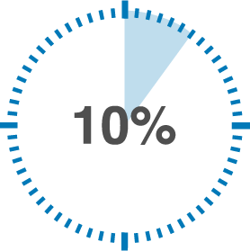

Vacinação do povo de Taquaritinga
A vacinação, decorrente da ordem cronológica estabelecida pelo Estado de São Paulo (SP) chegou hoje, no dia 3/25/2021. A idade requisitada para hoje era de 69 nove anos, descendo cada vez mais para chegar até a população mais jovem.
Confira maisPublicado a 3 minutos atrás

Taquaritinga já tem mais de 10% da população vacinada contra COVID-19
Mesmo com a grande dificuldade na obtenção de vacinas contra a COVID-19 neste momento que estamos vivendo, com o início da vacinação de idosos com 70 anos ou mais nesta terça-feira (23), Taquaritinga alcançou a marca de 10,17% de pessoas vacinadas.
Confira maisPublicado a 10 minutos atrás